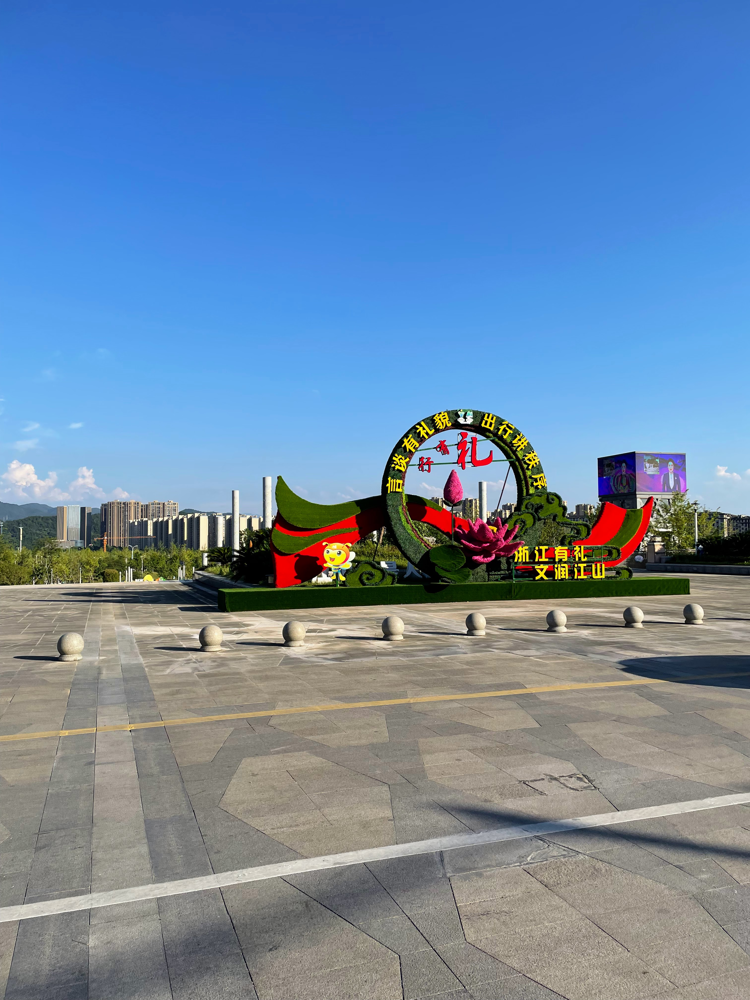
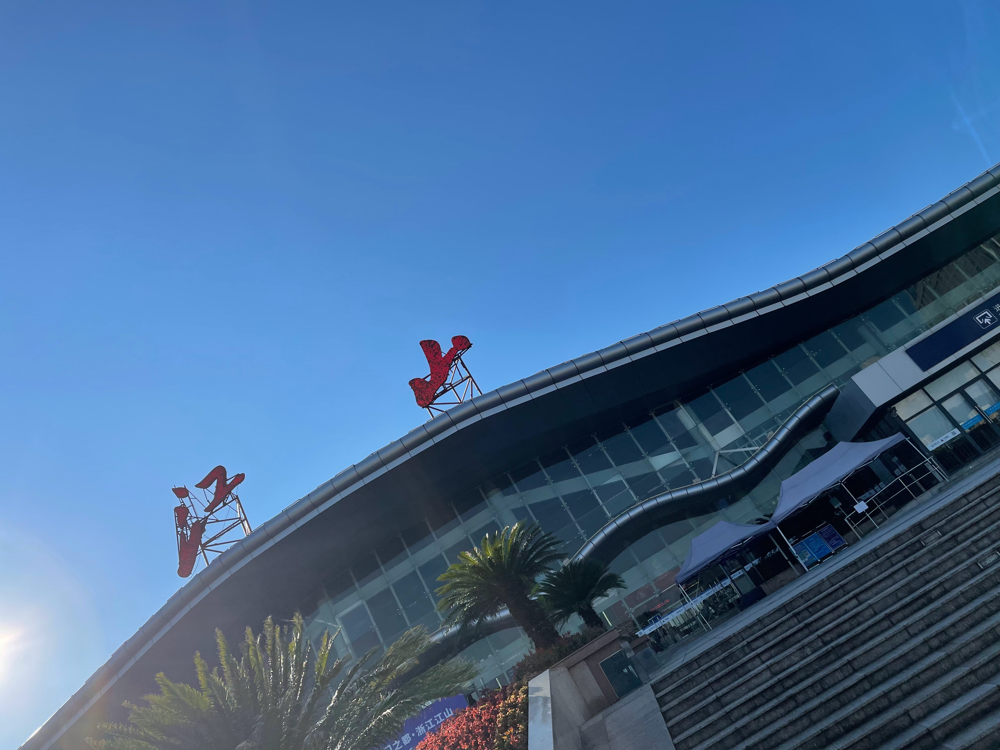
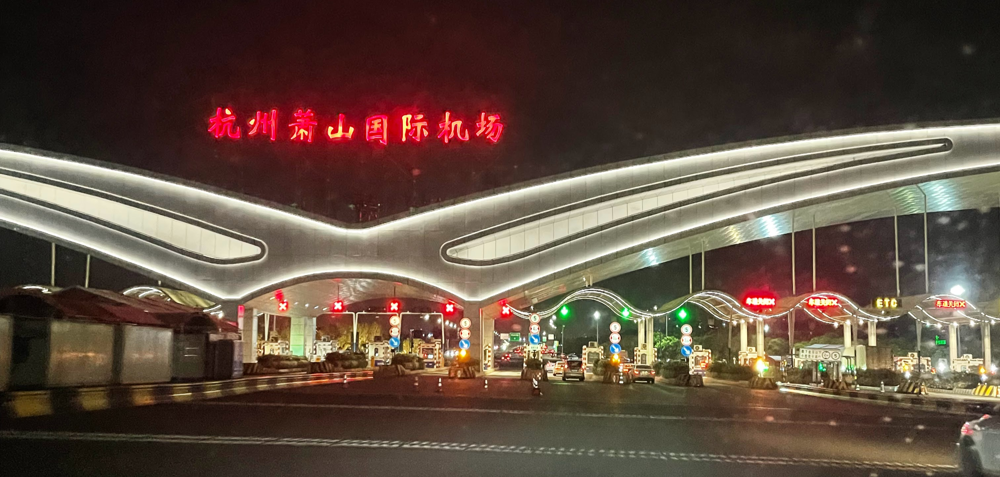
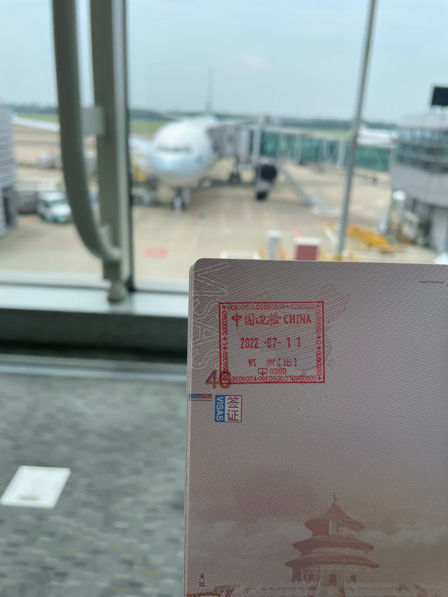
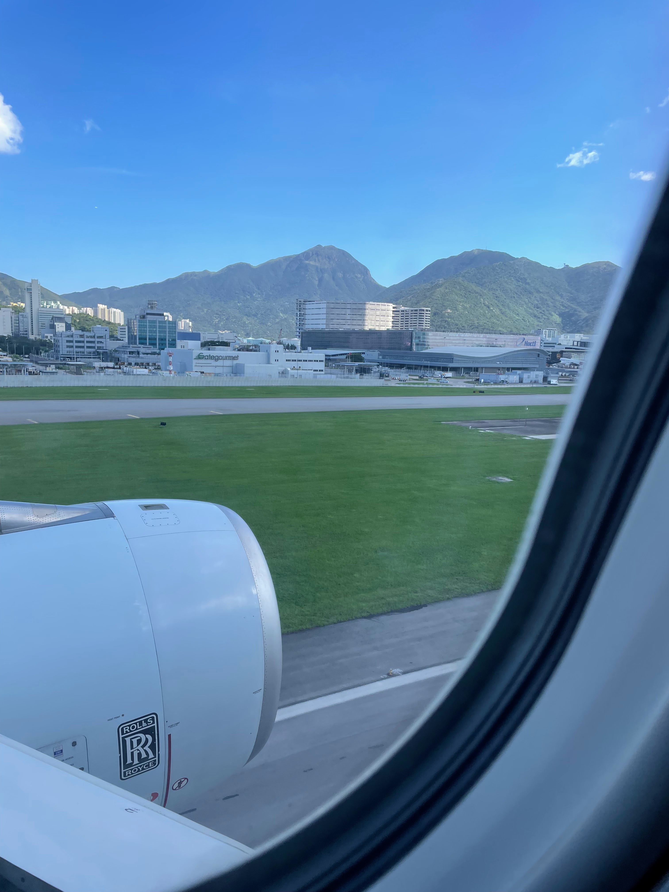
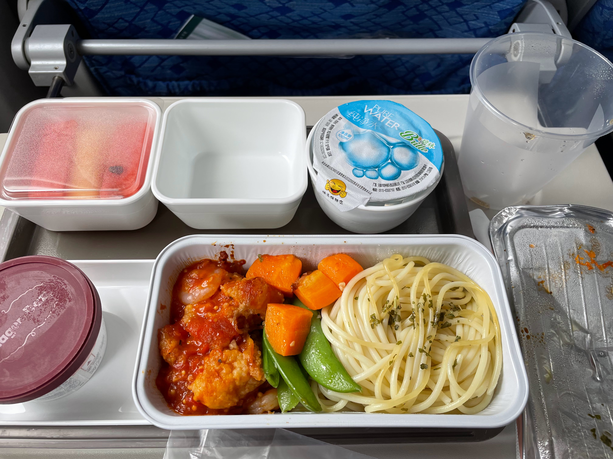

踏上离开故土的道路
因国内变态的内卷环境和近几年对国内乱象的失望，我在2021年11月决定来澳大利亚读高中。
中间的曲折过程按下不表，但好在我在整个过程中碰到的绝大部分人都是以希望我好的目的出发帮助我，尤其是办护照时在公安出入境大厅，虽然需要的材料多，但这里的工作人员都没有故意刁难我或者司马脸，都在尽力的帮我解决问题。
最终，2022年2月获得了墨尔本一所高中的录取通知书，在2022年7月9日获得了签证。
学校是7月11日开学，因为移民局过于倒闭导致签证过于晚下。我是课程中第一个今年抵达的中国人，同时还有一位同学在19号才拿到签证，20号就踏上了行程，险些错过截止日期，而其余过半的同学都没能在最终截止日期前拿到签证，错过了本季度入学的机会。
由于签证一直没下，我的机票改签了一次取消了一次，本来是可以早几天到不用那么仓促的，飞机的起降时间也更加人性化，本来是计划在新加坡转机的。
拿到签证后，我第一时间通知了我的父母和朋友，预订了11号早晨起飞的机票，在香港转机后同样于早晨抵达墨尔本。
这个时间安排过于紧促，留下了些小（da）小（da）的遗憾。在与家人短暂仓促的告别后，我在10号下午踏上了前往杭州的高铁。

杭州萧山国际机场T2航站楼（国际出发航站楼）冷清的可怕，值机柜台说飞机因消毒晚点两小时（实际上延迟了快5个小时，而且是计划内晚点，不懂为什么不直接推迟飞机票上的起飞时间），我在航站楼内从清晨等到了下午才登上飞机。候机厅的人远没有我这个十八线小县城高铁站的人多，整个航站楼都很安静，只听得到工作人员手持喇叭上发出的“请规范佩戴口罩，保持1米间距”的声音。
不知道为什么，这样的场景让我觉得有点赛博朋克，或者觉得有些吓人。
临近10点时，海关&边检开始工作，边检在简单询问我个人信息，查看了纸质的学校录取通知书和签证准签信后便放行（边检真的需要像银行高柜一样弄一个传话器，厚厚的玻璃隔着真的什么都听不到，我必须要以一个奇怪的姿势把耳朵凑近递文件的那块扁平的小口子才听得到）。一直到我被放行前，没有看到有被边检拒绝出境的人员。（不过说实话也可能是办护照就直接被卡了，轮不到在这里被卡）
早些时候网上流传着制造焦虑的各种边检剪护照、绿卡，拒绝出境的消息。我相信确有其事，但操作和力度远没有网上流传的那么离谱，而且也不乏被实锤瞎编的帖子。（真心希望这些制造恐慌的傻逼能死早点）
过安检的时候没收了我一瓶水，拒绝了我先喝一口再没收的请求，导致我登上飞机前口干舌燥。
最终，在16时许，飞机开始滑行、起飞，在对前方的未知憧憬又一丝畏惧的状态下，踏上了这趟旅途。当飞机接近香港国际机场，进入下降阶段，我看到地面车辆靠左行驶时，我知道我已经离开了这片生我养我的土地。

香港国际机场也很冷清，餐厅全部都关门了，除了一家叫“莆田”的餐厅开着。顺带一提，微信支付已经占领香港。（至少已经占领了香港国际机场）
但是在进入橙区（国际出发）后就发现候机厅里有一卡车一卡车的人，连一个座位都找不到，我只好守在一个即将登机的登机口前，待他们登机后抢了一个座位。
到达墨尔本，在行李转盘前等待了半个多小时后，终于拿到了行李，出关时什么都没问什么都没看，行李也没过机器，相当于抵达后刷了护照就直接走出机场了。（是第一次出国的乡巴佬，不知道这么松是常态化还是怎么样）
学校和住家都很 nice。到的第二天就跑去机房玩了，此后每天放学基本上天天都跑出去吃喝玩乐，电车火车公交坐了个遍。（墨尔本美食真多！😋）住家：你真勇敢，上一个新来的到了两个星期都不敢出去。
小插曲：学校里每节课都是要带着笔记本的，有个中国的同学明显是完全不会用电脑，我说 Windows 的时候纠正我说这个叫做田字格，说不知道我说的瘟抖死是什么东西，问电脑品牌说不知道，看了粉色才买的，另一个中国的同学也是女生，带了台 mac 来，我以为应该是挺会用电脑的，结果也不是，WPS 怎么创建文档都不知道，然后电脑打开看起来也是台新电脑，因为电脑上 Launchpad 甚至只有一页，估计是知道了学校要求上课需要电脑才刚买的。再除了我没有其他中国人了，其他国家的2个同学倒是都很会用电脑。
我本来以为现在越来越多的人不会用电脑甚至家里压根没电脑是一个全球化的趋势，中国只是稍微快进了一点，不过现在看来真只有中国是这样，国外真的是人手一台、多台电脑，国内我大部分同学全家也就一台老爷机级别的台式电脑，甚至还有不少人家里连电脑都没有（是2020年年初上网课的时候才暴露出来的）。就算有，也没人会去玩电脑，都在玩手机。
整个班 Apple 浓度过高，5个学生4台 mac（还有1台是田字格）。而且在商场里大街上真的是人均 iPhone，一眼看过去根本看不到其他品牌的手机。
这让我这样一个不怎么喜欢用手机的人来说感到非常愉快，也没有什么该死的傻逼 APP 或者网站一定要手机才能登陆或者干脆只有手机版。